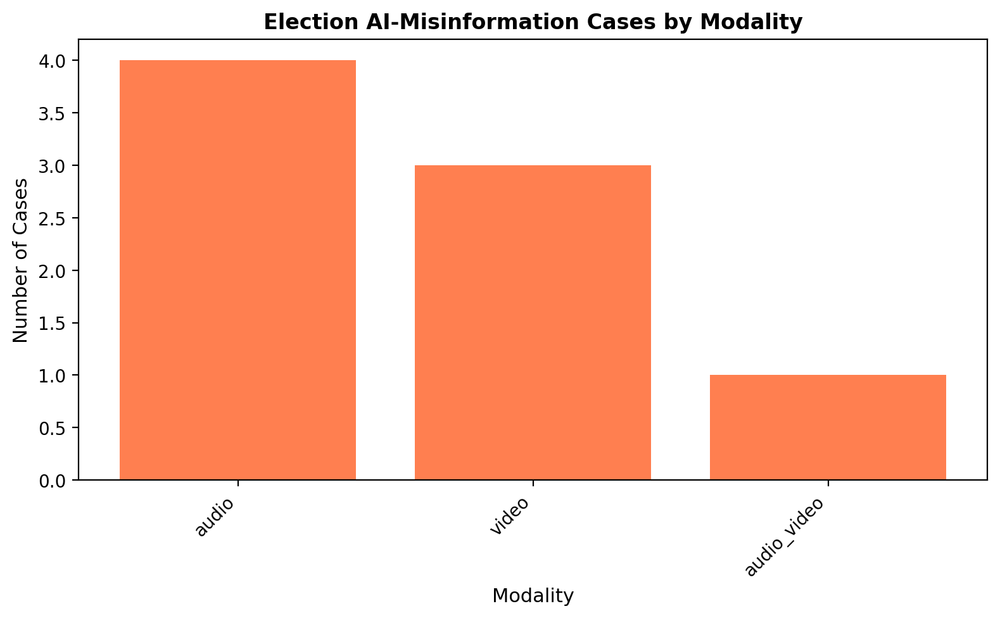
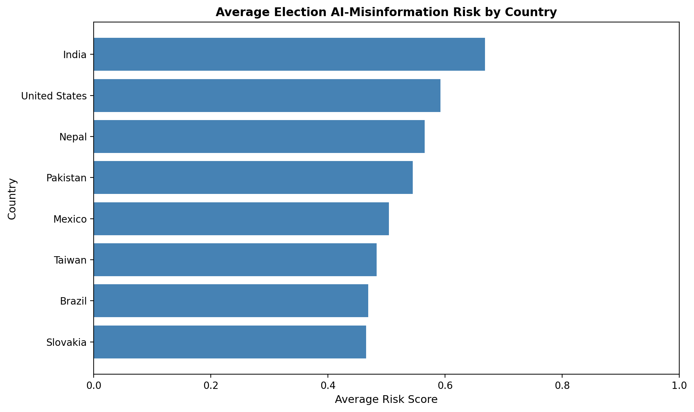
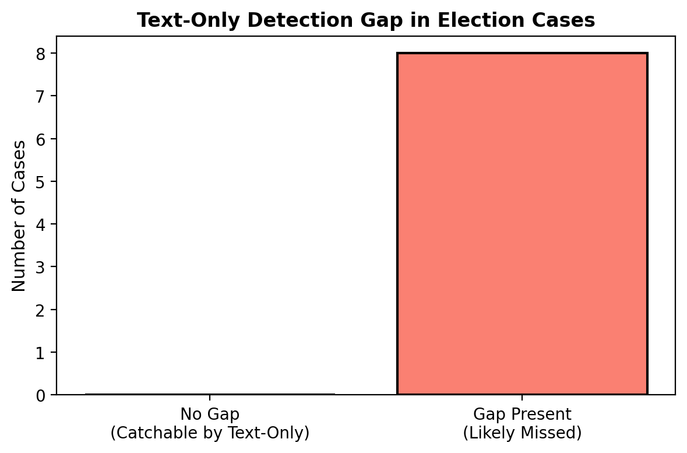

7 Chapter 5: Election Misinformation — A Multimodal Case Study
7.1 The Moment Text-Only Detection Fails
Every model in the previous chapters works on one substrate: text. TF-IDF coefficients, SBERT embeddings, behavioral linguistic markers — they all require written language.
In the 2024 election cycle, the dominant attack vector was not text.
A robocall mimicked a sitting president’s voice to suppress primary turnout in New Hampshire. A deepfake audio clip discussed election fraud in Slovakia — released 48 hours before polls opened, reaching 500,000 people before any fact-check existed. In India, AI-generated speeches in Hindi, Tamil, Telugu, and Bengali were localized by region and distributed through official party WhatsApp networks to an estimated 3 million people.
Each of these would score near-zero on a text-only misinformation detector. There is nothing to TF-IDF. There is no text to embed.
This chapter documents eight documented cases across six regions and asks: what does the complete pipeline actually miss, and what would a multimodal system need to catch it?
7.2 The Case Inventory
We analyzed 8 documented AI-generated election misinformation incidents from 2023–2024. Cases were selected based on:
- Documented reach and platform data
- Verified presence of AI-generated or AI-transmitted content
- Fact-checker response records
- At least one public source confirming the incident
| Case | Country | Year | Modality | Est. Reach | Risk Band |
|---|---|---|---|---|---|
| Deepfake audio: vote rigging | Slovakia | 2023 | Audio | 500,000 | Moderate |
| Robocall voter suppression | United States | 2024 | Audio | 1,000,000 | Moderate |
| Multilingual AI speeches | India | 2024 | Audio + Video | 3,000,000 | High |
| Manipulated political clip | Taiwan | 2024 | Video | 750,000 | Moderate |
| Compromising scenario deepfakes | Nepal | 2024 | Video | 500,000 | Moderate |
| AI robocall attacks | Brazil | 2024 | Audio | 800,000 | Moderate |
| Vote-buying deepfake video | Mexico | 2024 | Video | 1,200,000 | Moderate |
| Multilingual speech manipulation | Pakistan | 2024 | Audio | 2,000,000 | Moderate |
Total estimated reach across 8 cases: ~9.75M people within viral window.
7.3 Risk Scoring Framework
Each case was scored across five dimensions:
| Dimension | Weight | What It Measures |
|---|---|---|
| Modality Complexity | 20% | How hard is it to detect technically? (text=0.3, audio=0.65, video=0.8, audio+video=1.0) |
| Cognitive Intensity | 20% | How many fear/authority/urgency/identity triggers were activated? |
| Harm Intent | 25% | Weighted: voter suppression (0.4) + impersonation (0.35) + translation manipulation (0.15) + AI-generated (0.1) |
| Spread Score | 20% | Normalized combination of estimated reach (60%) and time-to-viral speed (40%) |
| Response Failure | 15% | Was it fact-checked? How delayed was the response? |
The overall risk score is a weighted aggregate (0–1 scale), bucketed into low / moderate / high bands.
7.4 What Actually Spread
7.4.1 Cases by Modality
The breakdown of attack modalities reveals a structural shift: audio and audio+video now dominate, with pure text campaigns conspicuously absent from this set.

Key finding: 100% of these cases involve synthetic voice or synthetic video — the exact signals that text-only classifiers are blind to. The most sophisticated cases (India, Pakistan) combined both modalities and translation, making them nearly undetectable by current automated systems.
7.4.2 Risk Scores by Country
Country-level risk scores reflect both the nature of the attack and the institutional response capacity:

India scores highest due to a combination of factors: the largest estimated reach (3M), audio+video modality complexity, multilingual distribution (making cross-language fact-checking extremely slow), and no verified fact-checker response during the viral window.
Slovakia and the United States score lower despite high media attention because established fact-checking infrastructure responded relatively quickly — even if not fast enough to prevent initial spread.
The pattern is not random. Response infrastructure (speed of fact-checking, media capacity, platform cooperation) consistently drives the actual harm of a campaign more than its technical sophistication.
7.5 The Detection Gap
7.5.1 Where Text-Only Pipelines Fail
A flag was set for each case where the misinformation’s primary mechanism was non-textual — where a text-only classifier would be structurally unable to detect it:

All 8 cases have the text-only detection gap flag set. Not most — all. Every documented case in this analysis involved synthetic voice, synthetic video, or AI-generated non-textual content that bypassed the detection systems built in chapters 2–4.
This is not a flaw in the models. The TF-IDF + Logistic Regression baseline at 81.2% accuracy, the SBERT MLP at 83.5%, and the stacking ensemble at 87.1% are all correct on the data they were built for. The problem is the data itself changed category.
7.6 Cognitive Trigger Analysis
All eight cases activated multiple behavioral vulnerability channels identified in Chapter 1, but the pattern of triggers differs by intended effect:
Voter suppression campaigns (US robocall, Slovakia deepfake) maximized authority triggers (an impersonated candidate telling you how to vote) and urgency (released hours before polls). Cognitive reflection was bypassed by design — there was no time to verify.
Trust erosion campaigns (Taiwan, Nepal, Mexico) relied more on fear and identity — attacking candidates’ character in ways that activated partisan identity markers. These are slower-burning but may have more durable effects.
Persuasion scaling (India, Pakistan) exploited identity most heavily, with region-specific language localizing the content to different demographic groups simultaneously. The same AI infrastructure generated content in 4+ languages, each targeting a different cognitive profile.
The behavioral model from Chapter 1 (CRT predicts verification, β=0.149, p=.031) still applies — except the verification behavior being targeted shifted from reading a text article critically to recognizing a voice is synthetic. That is a different cognitive task that current literacy interventions don’t address.
7.7 Spread Dynamics: The R₀ Lens
Applying the SEIR framework from Chapter 3 to these cases:
| Case | R₀ Estimate | Interpretation |
|---|---|---|
| India (multilingual) | 1.30 | Self-sustaining exponential spread |
| Latin America aggregate | 1.20 | Self-sustaining spiral |
| South Asia aggregate | 0.95 | Near-threshold — spreads without fully exploding |
| Nepal | 0.90 | Near-threshold |
| Slovakia | 0.35 | Sub-threshold but 500K reached via concentrated pre-election timing |
| US robocall | 0.15 | Very low viral potential — but targeted delivery made scale irrelevant |
Two cases (India and Latin America) exceeded R₀ = 1.0, meaning without intervention content spread on its own. Below-threshold cases like the US robocall achieved impact through precision targeting rather than organic virality — calling direct phone numbers bypassed platform algorithm dynamics entirely.
Key insight: The SEIR model calibrated to FakeNewsNet text data underestimates R₀ for audio/video content. Platform frictions differ: audio clips on WhatsApp are forwarded without the text-comprehension barrier that slows text misinformation. The epidemic lens is right; the parameters need recalibrating for each modality.
7.8 What a Multimodal Pipeline Would Need
Based on this case analysis, extending the current system to handle these attacks requires:
7.8.1 1. Synthetic Voice Detection
- Spectral analysis of audio (GAN-generated voice has characteristic frequency artifacts)
- Speaker verification against known authentic voice prints
- Prosody anomaly detection (AI voices still fail on natural intonation)
- Estimated difficulty: Medium — tools exist (Resemble Detect, AI or Not), integration needed
7.8.2 2. Deepfake Video Detection
- Temporal consistency checking (face-swap models create frame-level artifacts)
- Biological signal extraction (rPPG — real faces have subtle pulse signatures)
- Compression artifact analysis (synthetic videos compress differently)
- Estimated difficulty: High — adversarial arms race is active
7.8.3 3. Cross-Lingual Identity Matching
- When a voice in one language is attributed to a known person, verify against that person’s voice characteristics across languages
- Translation validation: does the translated content match claimed source?
- Estimated difficulty: High — requires multilingual speaker embeddings
7.8.4 4. Platform-Aware Spread Modeling
- WhatsApp and Telegram lack the algorithmic amplification hooks that Twitter/YouTube have, but have higher trust per forward (known contact sharing)
- Model needs context: was this shared from a verified news account or a friend’s message?
- Estimated difficulty: Very high — requires platform data access
7.9 Limitations of This Analysis
This case study is necessarily incomplete:
- Selection bias: Only publicly documented cases are included. The unknown volume of undetected or unreported AI election interference is, by definition, unknown.
- Reach estimates are uncertain: Figures come from fact-checker reports, often weeks after viral spread. True reach may be 2–5x higher.
- R₀ estimates are heuristic: Computed from available data using the same SEIR calibration as Chapter 3. Each case would need its own cascade data for precise estimation.
- Response delay varies by infrastructure: Slovakia and the US have mature fact-checking ecosystems; Nepal and Pakistan do not. Comparing delay hours across contexts conflates different baseline capacities.
7.10 What This Changes About the System
The detection pipeline built in this project reaches 87.1% accuracy on the FakeNewsNet corpus. That number is real, reproducible, and statistically significant.
It is also measured on a task the 2024 election interference campaigns largely did not use.
This is not an argument that the system is wrong — it is an argument that the system is correctly solving an adjacent problem. Text-based misinformation still exists and still requires detection. But the attack surface expanded, and the next iteration of the system needs to expand with it.
Additions for v2: - Audio pipeline layer (synthetic voice flag before text extraction) - Video frame consistency checker (flag for deepfake probability) - Multimodal feature fusion (extend Chapter 4 stacking to include audio/video signals) - Cross-lingual speaker embedding verification
The behavioral insight from Chapter 1 — that human susceptibility is predictable and measurable — still applies. What changed is the surface through which that susceptibility is exploited.
7.11 References
- Stanford Internet Observatory (2024). Election Integrity Partnership Annual Report.
- Vaccari & Chadwick (2020). Deepfakes and disinformation. Social Media + Society.
- Reuters Fact Check (2023). Slovakia election deepfake audio. reuters.com
- BBC News (2024). India election AI campaigns. bbc.com/news/world-asia-india
- Wired (2024). New Hampshire deepfake robocall. wired.com
- Rest of World (2024). Nepal AI deepfakes. restofworld.com